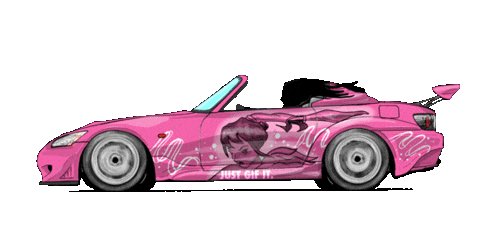
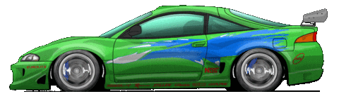
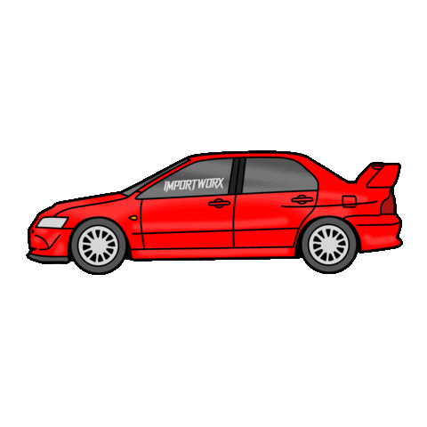
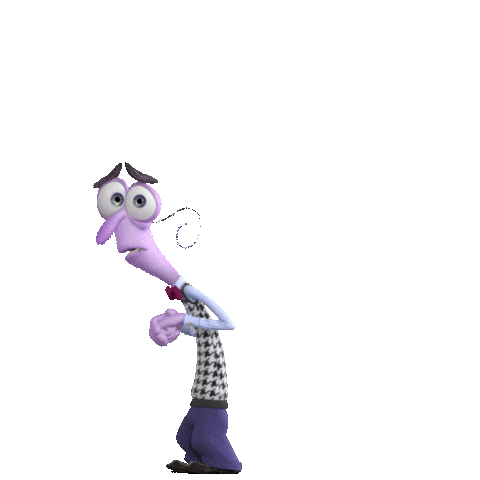
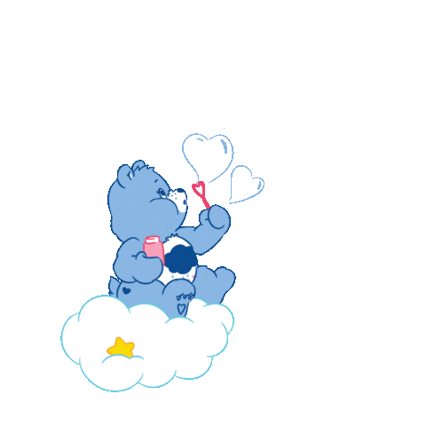

Si fuera un personaje:
Gruñosito de los ositos cariñositos
Michelle V. Flores
Procreada por Nancy Flores un 27 de Julio nace Michelle, llevando el fuego en su ADN. Es una Leo pura sangre de las que ya no quedan: orgullosa, coqueta, deslumbrante y con una presencia tan fuerte que se nota desde el primer segundo. Le encanta descifrar a las personas a través de los signos, tal vez porque ella misma es el ejemplo perfecto de lo que significa representar a su signo zodiacal. Sin embargo, lo más hermoso de ella no es solo esa fachada imponente, sino todo el mundo que lleva dentro. Es la persona más chistosa, ocurrente y divertida que vas a encontrarte en tu vida, con ella las horas se pasan volando y las risas nunca faltan. Al mismo tiempo, posee una madurez y una empatía increíble. Es esa consejera perfecta y leal a la que puedes acudir con los ojos cerrados, sabiendo que sabe leer entre líneas y darte el abrazo o la palabra exacta cuando el exterior se convierte un tornado.
✦ Su amor más grande e incondicional: sus sobrinitos Leo, Mateo y su noviecita Alexandra.
Habilidades y Rutina Digital
Si no la encuentras probablemente está atrapada en bucle pasando mucho tiempo viendo TikTok o dando cátedra en Free Fire, donde hay que admitirlo: ¡es buenísima, la mejor!
Pasión por las Tuercas
Le fascinan los autos deportivos con estilo, específicamente las leyendas de Rápido y Furioso

Honda S2000 (Suki)
Mitsubishi Eclipse (Paul Walker)
Lancer Evo (Paul Walker)Pantalla e Historia
Le encanta sumergirse en buenas historias. Su película favorita de siempre es el drama romántico de El Diario de una Pasión, y en el mundo de las series, su preferida indiscutible es el k-drama intenso Gloria (sí, esa joyita coreana).
Gustos Musicales
 Tiene una obsesión gigante con la música. Su himno definitivo es "All I Wanted" de Paramore, pero también tiene un lado muy marcado por la "música comunista" de culto y el folclor/rock chileno, escuchando activamente a Macha y El Bloque Depresivo, Manuel García y Los Tres, entre otros.
Tiene una obsesión gigante con la música. Su himno definitivo es "All I Wanted" de Paramore, pero también tiene un lado muy marcado por la "música comunista" de culto y el folclor/rock chileno, escuchando activamente a Macha y El Bloque Depresivo, Manuel García y Los Tres, entre otros.
Destino Soñado
Si pudiera tomar un avión ahora mismo, su meta global absoluta sería empacar maletas y viajar a Francia/Italia para perderse entre sus calles.
La Criptonita de Michelle

Todos tenemos cosas que nos apagan. Michelle detesta los mariscos y no soporta bajo ningún concepto el olor a naranja. Además, la gente y las multitudes masivas la ponen sumamente nerviosa.
Le tiene un miedo profundo a la muerte y es súper hipocondríaca: sentir cualquier mínimo dolor físico la hace psicosearse por completo pensando lo peor.
Su mente descansa cuando piensa en la playa (su lugar preferido en el mundo entero) y si le vas a regalar flores, que sean tulipanes, son sus favoritos, aunque por alguna razón su noviecita solo le ha regalado lirios y rosas de momento. Nota mental para la programadora.

¿Cómo sanarla cuando está triste?
No requiere sermones ni soluciones lógicas. Ella necesita: un abrazo apretado de su novia, escuchar palabras bonitas, recibir nanai en completo silencio sin que le hablen, sentirse ultra cuidada y recibir puras demostraciones reales de amor. ❤️
Interactivo: Pasa el mouse o toca la pantalla para crear magia.